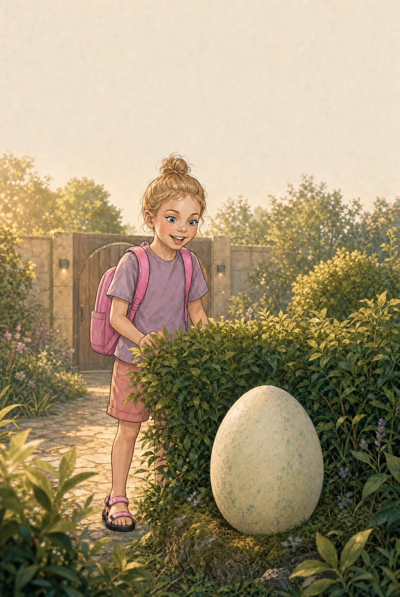

Dad stands by the door.
“Happy birthday, Shir!” he says.
“Good luck today!”
I smile. “Bye, Dad!”

I push the door wide.
A garden?
Here?
Between all these buildings?

I look over the bush.
An egg.
An egg as big as my school bag!
Then the egg moves.
Three sample pages; chapter not yet complete.